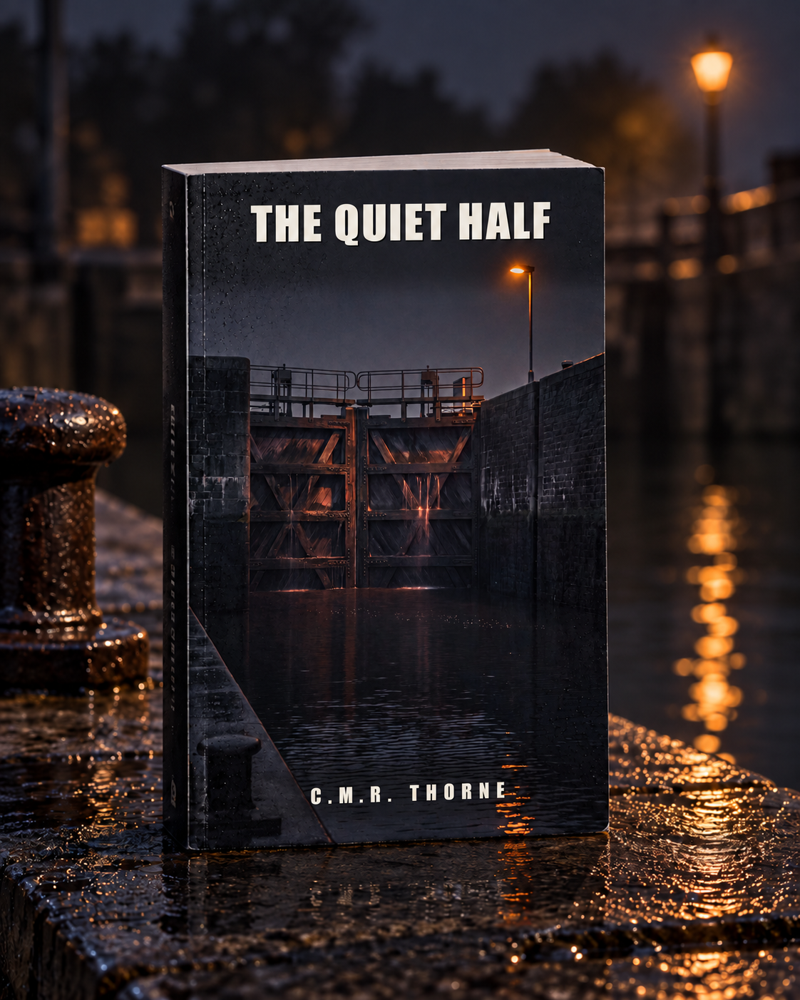

LOWLANDSPRESS
LOWLANDSPRESS

The Quiet Half
A thriller
A DNA test reveals that the boy at her kitchen table is not the boy she gave birth to.
Where to buy
When her niece orders DNA kits for the whole family at Christmas, the family group chat spends one Tuesday evening reading out loud what midwife Judith Meerman has known for twenty-four years: the boy at her kitchen table is not the boy she gave birth to. Eleven days later the only woman who can explain it is found dead in the lock basin, a day after leaving seven words on Judith's voicemail. Judith delivered half the village and can tell you the exact minute seven hundred children were born. Her own two are the ones she cannot. A psychological thriller about a question left unasked for twenty-four years, and what it costs to finally ask it out loud.
Product details
- Publisher
- Lowlands Press
- Language
- English
- ASIN (Ebook)
- B0HL5SMV4N
Read the opening
The opening of the book, the same pages a store lets you look inside. Read on at any of the stores above.
Prologue
There is a bucket on the landing. It is half full, and something is floating in it that no one is coming back for.
Two doors. Room 1 on the left, Room 3 on the right. Room 2 is a broom closet and always has been, but no one ever changed the numbers.
On the wall between the doors hangs a clock with a red second hand. The hand makes a small sound at every jump, and in a house where no one is talking, that is the loudest sound there is.
At twelve past three, a boy is born in Room 1.
He is small. Not worryingly small, not early – small the way some children are small, with long thin fingers and a rib cage you can count through the skin. His shoulders come free without anyone having to pull. That is a good sign. That is always a good sign.
There is no crying.
The woman on the bed doesn't ask. She has barely asked anything in eight hours. She lies with her head turned to the side and her hands open at her hips, looking at the wall, and that too is a way of getting through it.
The midwife lays the child on his back on the counter, on a towel she set out at a quarter to two. She rubs. Not gently. Up along the spine, then across the chest, then up again. Her thumb rests on the breastbone. She counts in silence, because you count in silence, and a count of sixty lasts longer than people think.
She lays two fingers in the crease of the groin. She waits. She moves her fingers to the upper arm. She waits again.
She takes the bag. She sets the mask over nose and mouth, the rim tucked neatly under the chin, the way it should be, the way it is in every course, and she squeezes. The chest rises. That is the only thing she wants to see and she sees it, and so she does it again, and again, and she counts again, and behind her the woman on the bed says nothing.
The red hand jumps. And jumps.
There is a moment – it is not a decision, it is only a body that stops taking part – when the midwife holds her hands still.
She puts down the bag. She lays her hand flat on the child's chest, as if to keep him warm, or as if to feel whether she is mistaken.
She is not mistaken.
She looks at the clock. She doesn't call a time out loud. There is no one to write it down.
Then she wraps the child in the towel she laid him on. She does it slowly and neatly, corner over corner, the way you swaddle a child who is going home.
The woman on the bed has not turned her head.
The midwife walks to the door with the bundle against her chest. At the threshold she stops and listens to the hallway, and the hallway is empty.
She closes the door of Room 1 behind her.
And she walks to Room 3.
Chapter 1
The results came in at fourteen past eight, and Judith was standing with her back to the table, scraping out the pan on the stove.
She'd worked all day. Two checkups in the morning, an intake, and in the afternoon a woman on Kolkstraat who thought, far too early, that it had started, and it hadn't, and whom she'd spent half an hour reassuring, because half an hour of reassurance is cheaper than a night in the hospital. At home she'd made boerenkool, kale mashed into potatoes, because it was Tuesday and because Lieve only ate at home during breaks, and she'd made too much of it, as always.
Behind her, Lieve said, "Oh. Oh, it's in."
"What's in."
"Verwant. The results." Lieve pushed her chair back, and the sound of chair legs on the tile floor went through Judith the way it had gone through her for nineteen years. "Look. Everyone gets it at the same time. Grandpa too. Uncle Wouter too."
"Put that thing away until I'm sitting down."
"Mom."
"I mean it."
She set the pan in the sink and ran water into it and dried her hands on the dish towel hanging over the oven door. It was the one with the bicycles on it. One candle of the three on the table was still burning. The dishwasher was halfway through its cycle, making the soft hissing sound you only hear when everything else is quiet. Timo sat with his elbows on the table, looking at his phone the way he always looked at his phone, head too far forward, and she was about to say something about it.
She sat down. "Go ahead."
The app was called Damhof – all of us. Ruud had set it up in 2019, two months before his mother died, because there was no other way to tell nine people something at once. Something got posted in it six times a year. A birthday. A photo of the bulbs when they'd just come up. Once, a death, and it was his own, and Wouter had posted it. Judith had turned the notifications off the year Ruud died and never turned them back on.
Lieve already had the app open. She tilted the screen so Judith could see and pulled it right back, because this was hers. She'd thought of it. She'd sat in her room in Utrecht in November working out what five kits cost and whether her side job would cover it, and she'd had the idea of handing them out at Christmas so that in February, at Grandpa's eightieth, a family tree could hang on the wall. A real one. With lines.
"Okay," Lieve said. "At the top is who you are. Then comes your ethnicity, which is useless, it's the same for everyone here, ninety-three percent Northwest Europe, what a surprise. And then the fun part. Relatives. It ranks them by how close they are."
"And?"
"Grandpa shows up as my grandparent. Aunt Elke as aunt. Uncle Wouter as uncle." She looked up. "It just checks out. It's exactly what it's supposed to be."
"That's nice."
She half meant it. She'd let the whole order happen the way she let most things of Lieve's happen: one comment, and no resistance beyond that. Having an opinion would have turned into a conversation, and it had been November, and she'd been tired.
"No, it's not nice, it's funny, because I waited six weeks for this and the answer is: yep, it's exactly what you already knew." Lieve gave a short laugh. She scrolled on. "Timo. Where are you."
Timo didn't look up. "I'm not doing it."
"You spat. I watched you."
"I'm not doing the looking part."
"You're nineteen years old in your head." Lieve turned her phone a quarter turn. "You're in here, you know. Timo Damhof." She frowned. "Cousin."
Judith heard it.
She heard it the way she heard a change in a heartbeat: not as a shock, but as a shift of attention, in which everything that had mattered a second earlier – the pan, the dish towel, the dishwasher – slid to the edge of the room and stayed there.
"What did you say."
"Cousin. Well, that's not how it's written, it's in centimorgans, that's a unit, I just learned that too. There's a number and under it what it could be." Lieve read it out, in the voice she used for reading something she hadn't thought about yet. "Timo Damhof. Eight hundred sixty-six centimorgans. Possible relationship: first cousin." She looked up. "That's weird, right. He's just my brother."
"Those are estimates," Judith said. Her voice came out normally. That didn't even surprise her. "Tests like that give a range. They don't know who anyone is, they only know how much you share."
"Yeah, but brother isn't even on the list. Half brother either."
"Lieve."
"I'm just saying." She scrolled up and down with her thumb, fast, the way she did everything. "Wait. No. This is stupid."
Timo had turned his phone face down on the table. He was looking at his sister. He still said nothing.
"What's stupid," Judith said.
"He has a list too. Everyone has a list. And I'm in his, and Uncle Wouter is in his, and Grandpa is in his." Lieve looked up, and there was something in her face Judith had never seen there before, and recognized at once, because she knew it from work: the face of someone seeing something that cannot be, with three seconds to decide whether to say it out loud.
She said it out loud.
"Mom. Why aren't you in it?"